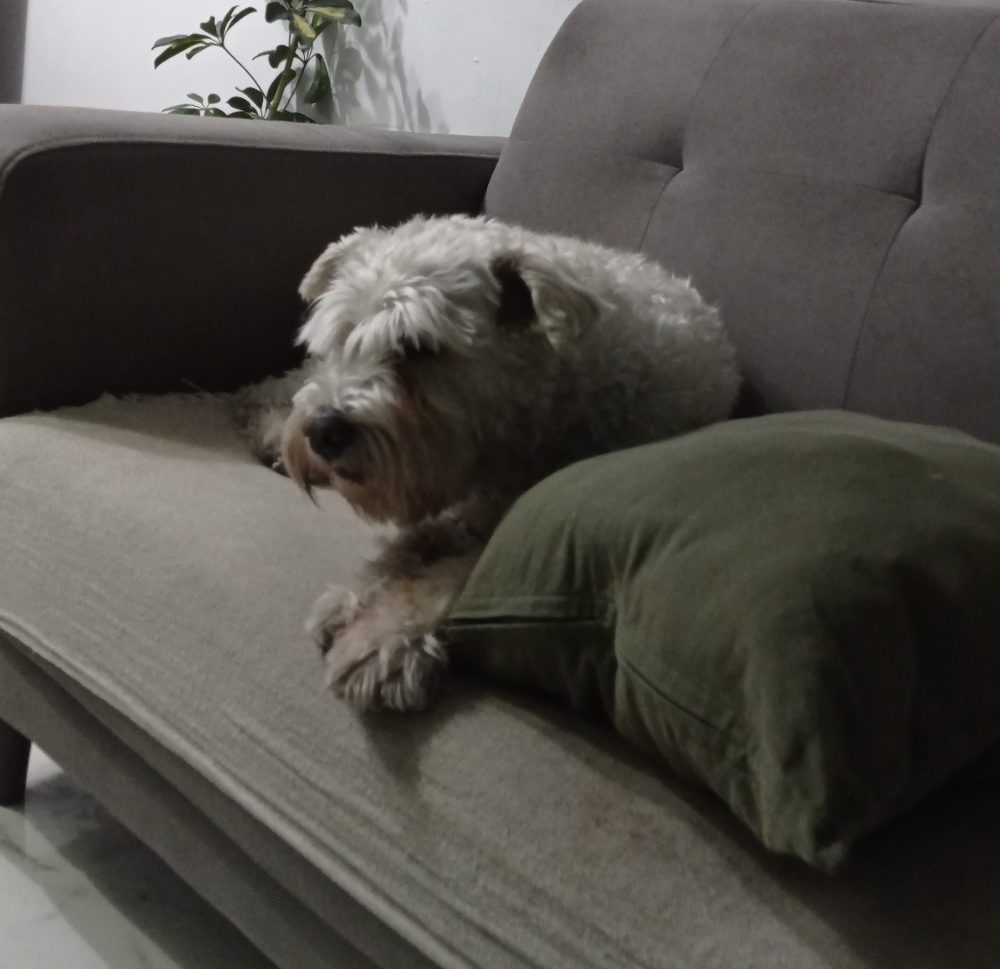
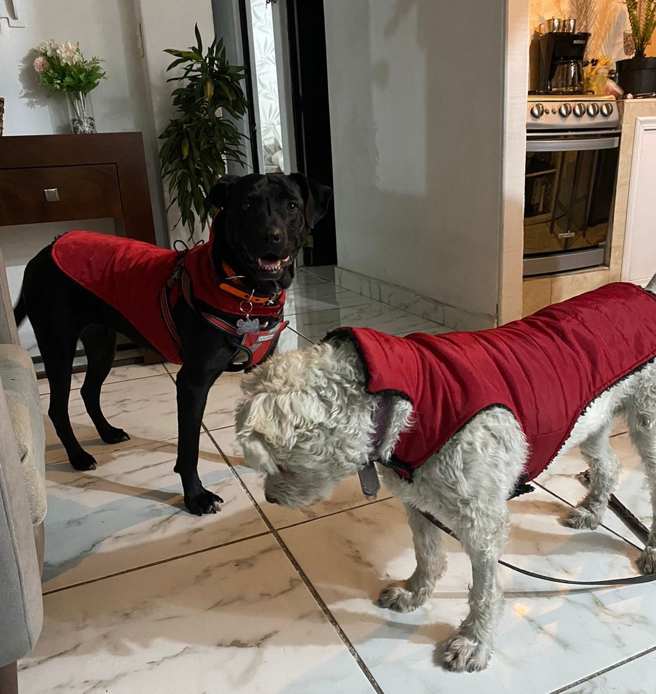
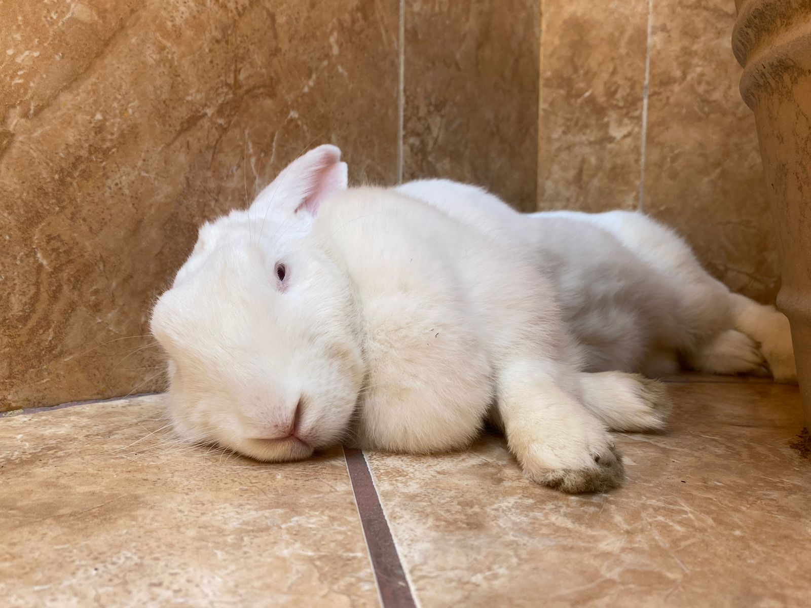

¿Quienes somos?
Somos una pareja plenamente enamorados el uno del otro que se conoció hace ya 3 años y medio, pero que lleva solo 7 meses de haber decidido juntar sus vidas. Estudiantes de QFB y amantes de los animales como las Baloos, las Moritas y las Salchichas, pero también de osos perrones y paquidermos Bobolis.
¿Dónde surgió el amor?
Todo comenzó con un vodkita compartido con mucho amor y de la forma mas romántica posible.
Nuestra música
Esta es un poco de nuestra música, pero la que le sabe mucho es mi Cristina Segura (MI Criko)
Nuestros hijos
-
Baloo
Ella es Baloo, una de las perritas que rescata Criko, porque tiene un corazón hermoso. Es una perrita blanca y criticona, parece una señora, pero está bien chula
-
Ella es Morita, igual una perrita rescatada, es negrita y está muda, porque es de barrio y vivió muchas cosas antes de llegar a la casa de Criko, es muy tierna y miedosa.
La Mora
 -
Salchcicha
Ella es Salchicha, una conejita salchichil que rescatamos del laboratorio, ahora es una coneja que corre por todos lados y es feliz